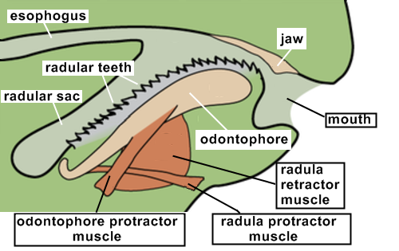

Welcome to the world's premiere snail dentistry office!
Here at Snoothbrush, We believe that every tooth matters. whether you have one, or twenty thousand, we are here for you
We have developed our own custom tools and processes in order for your lovely snail radula to be as healthy as possible. We also continually check on ongoing research to make sure we are as up to date as possible